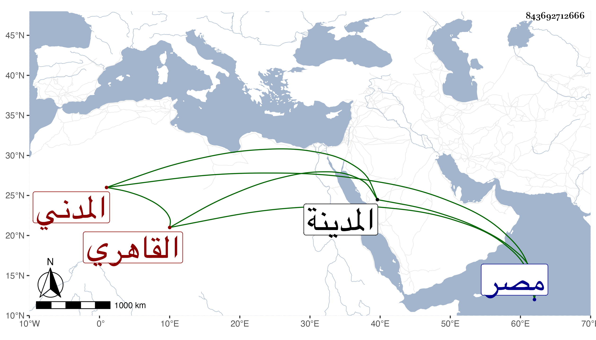

0902Sakhawi.DawLamic.ITO20230111-ara1.EIS1600.843692712666
Biography ID: 843692712666
27
محمد بن محمد بن محمد الشمس القاهري ثم المدني أحد رؤساء مؤذنيها ووالد أحمد أبي الجماعة . استقر في الرياسة بعيد القرن بعد مباشرته لها في قلعة الجبل بمصر ، وكان متميزا في الميقات ومتعلقاته بحيث صنف في ذلك ونظم قصائد نبوية قيل أنها تزيد على ألف وعندي من نظمه أبيات في تاريخ المدينة ، وكذا باشر الخطابة والإمامة معا بطيبة نيابة . ومات في سنة أربع وعشرين .
